41 cases. Compare the two columns row-by-row; differences indicate either parity bugs in the Compose port or rendering bugs in the legacy view.
| Case | Legacy VerseItem | VerseItemCompose |
|---|---|---|
01-simple text="In the beginning God created the heavens and the earth." | 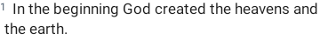 | 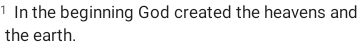 |
02-simple-no-number text="And the earth was without form, and void." verseNumberShown=false | ||
03-simple-long-number text="And it came to pass." verse=119 | ||
04-checked text="Selected verse content here." checked | ||
10-formatted-default text="@@A simple formatted verse with no paragraph marker." | ||
11-paragraph-zero text="@@@0First line of paragraph zero, which keeps the verse number inline." | 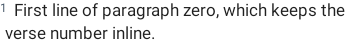 | |
12-paragraph-first-indent text="@@@^This paragraph uses caret indent for first-line hanging style. The rest of the paragraph should wrap to a different indent." | 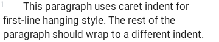 | 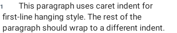 |
12b-caret-long-wrap text="@@@^1:1:6 para start with looooooooooooong text laba laba bala bala laba laba bala bala laba laba" verse=6 | ||
13-paragraph-one text="@@@1Indent level 1 paragraph that wraps several lines to demonstrate consistent rest-indent." | 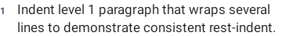 | |
14-paragraph-two text="@@@2Indent level 2 paragraph that wraps several lines." | ||
15-paragraph-three text="@@@3Indent level 3 paragraph wraps to show indent3 rest spacing." | ||
16-paragraph-four text="@@@4Indent level 4 paragraph wraps to demonstrate the deepest preset indent." | ||
20-italic text="@@he said, @9thus says the LORD@7 unto you all." | ||
21-red-words text="@@@6Truly I say unto you, until heaven and earth pass away.@5" | ||
22-mixed-italic-red text="@@@9narrator:@7 @6and Jesus answered@5 with a parable." | 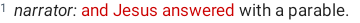 | 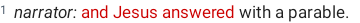 |
23-explicit-linebreak text="@@First line.@8Second line after explicit break." | ||
24-multi-paragraph text="@@@^A first paragraph with caret indent that wraps to multiple lines for testing.@1A second paragraph at indent level 1." | 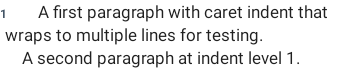 | |
25-caret-mid-verse text="@@First sentence of the verse.@^A new paragraph starting mid-verse with caret indent." | ||
26-linebreak-then-caret text="@@First sentence.@8@^Next block after a line break and caret indent." | 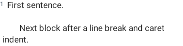 | 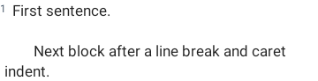 |
27-multi-indent-cycle text="@@@^Caret intro line.@1At indent level one.@2At indent level two.@3At indent level three.@4At indent level four.@0Back to indent zero." | 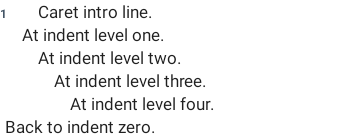 | |
30-footnote text="@@The word came@<f1@>@/ unto the prophet." | ||
31-xref text="@@As it is written@<x1@>@/ in the law." | ||
32-footnote-and-xref text="@@A verse@<f2@>@/ with a cross-reference@<x3@>@/ inline." | ||
33-multi-digit-footnote text="@@Verse with footnote@<f42@>@/ tag." | ||
40-full-highlight text="@@The whole verse highlighted in yellow." highlight=#fff4d03f | ||
41-partial-highlight text="The middle words are highlighted only." highlight=#ff85c1e9 partial=[4..14] | ||
50-small-text text="Render at smaller text size." textSizeMult=0.7 | ||
51-large-text text="Render at larger text size." textSizeMult=1.5 | ||
52-very-large-text text="Render at extra-large text size to push wrapping." textSizeMult=2.0 | 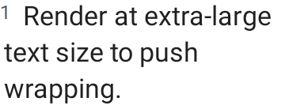 | |
60-bookmark text="Verse with one bookmark." bookmarks=1 | ||
61-multi-bookmarks text="Verse with several bookmarks stacked." bookmarks=4 | ||
62-note text="Verse with one note." notes=1 | ||
63-note-and-bookmark text="Verse with both bookmark and note." bookmarks=1 notes=1 | 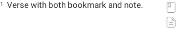 | 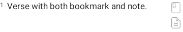 |
64-progress-mark text="Verse pinned with the first progress mark." pm=0x100 | ||
65-all-progress-marks text="Verse pinned with every progress mark." pm=0x1f00 | 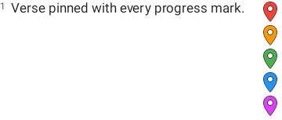 | 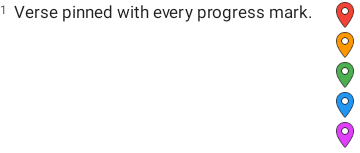 |
66-has-maps text="Verse that has accompanying map data." hasMaps | ||
67-everything text="Verse with every attribute set at once." highlight=#ffaed581 bookmarks=2 notes=1 pm=0x200 hasMaps | 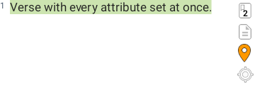 | 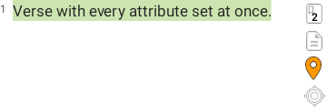 |
70-serif-simple text="Verse rendered with a Serif typeface." typeface=Serif | ||
71-serif-italic text="@@he said, @9thus says the LORD@7 with serif italics." typeface=Serif | ||
72-monospace-simple text="Verse rendered with a Monospace typeface." typeface=Monospace | 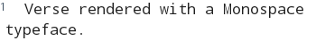 | 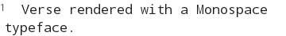 |
73-monospace-formatted text="@@@^A monospace verse with @6red words@5 and @9italic@7 mid-line." typeface=Monospace | 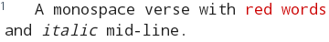 | 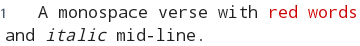 |